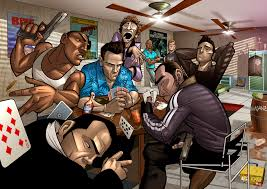
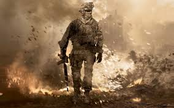
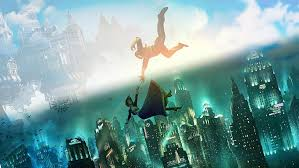
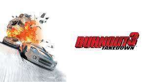
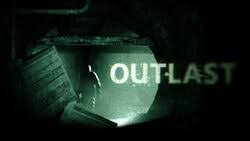
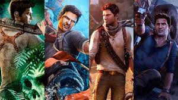
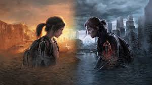

MI TOP DE SAGA DE VIDEOJUEGOS FAVORITOS
1. Saga God of war
Para mi es de los mejores juegos del genero hack and slash, con una historia tan profunda como epica de un dios griego traicionado por los dioses del olimpo,y hasta el dia de hoy me sigue impresionando que la ps2 tuviera la suficiente potencia para poder correr casi toda la saga griega

2. Saga de Grand Theft Auto
La sátira por excelencia del mundo moderno. Cada entrega de esta saga abarca un punto de vista distinto: desde el sueño americano hasta el vacío existencial que sufre alguien al convertirse en el capo más grande de la mafia. Esta saga marcó un antes y un después, tanto en la industria de los videojuegos como en mi vida, por todo lo bueno y también lo malo que es capaz de mostrar.

3. Saga Resident Evil
La mejor (en mi opinio) saga de survival horror, desde el clasico Resident evil de 1996, hasta el ultimo Redident evil 4 Remake, esta saga siempre a tenido una atmosfera oscura y claustrofica,llena de puzzles y que con el tiempo a ido evolucionando a una mezcla de horror, accion y ciencia ficcion, sin duda Resident evil marco el genero del "survival horror" y lo convirtio en un icono cultural

4. Saga Call of duty
La saga de call of duty es la saga de shooter en primera persona mejor que existe en el mercado, desde los cod clasicos de la primera y segunda guerra mundial hasta los mas futuristas como cod advanzer warfere y infinite warfere, esta saga lleva el "realismo" del combate, la narrativa y una cinematografia a otro nivel y sobre todo un modo multijugador que a definido a toda una generacion de videojuegos

5. Saga bioshock
Los tres juegos de BioShock marcaron un antes y un después en mi vida. Antes de conocer esta saga de ciencia ficción y filosofía, nunca me había cuestionado realmente el mundo que me rodea. Pero gracias a sus personajes y narrativa, pude darme cuenta de que la realidad no es siempre lo que aparenta.Esta saga nos invita a reflexionar sobre una utopía libre de todo aquello que ata al ser humano, de todo lo que lo hace miserable. Con una crítica directa al objetivismo y al control social, BioShock nos hace pensar sobre la condición humana y las consecuencias del poder sin límites.

6. Saga Burnout
La saga de autos que combina velocidad, autos de lujo y rock es única. Considero que no hay muchos juegos —ni siquiera los actuales— que puedan replicar lo que esta franquicia ofrece. Con una conducción muy buena para su época, autos impresionantes y, sobre todo, las mejores bandas de rock del mundo, desde Red Hot Chili Peppers hasta My Chemical Romance, esta saga se ha destacado.Con el tiempo, ha incorporado más géneros como punk, rock alternativo, pop punk y post-hardcore. El juego mezcla perfectamente todos estos elementos, haciendo que quieras tomar tu propio auto y conducir por tu ciudad a más de 200 km/h mientras escuchas rock.

7. Outlast
Outlast es una saga de terror en primera persona donde controlamos a un reportero que se adentra en el infierno en la tierra: un manicomio abandonado y aislado de todo contacto con la sociedad. Este juego es desesperante, con un ambiente opresivo que genera inquietud e incomodidad en el jugador.La saga logra crear un sentimiento real de inseguridad y terror psicológico gracias a su uso perfecto del sonido, la tensión constante y la oscuridad para generar miedo. Sin duda, es uno de los mejores juegos de terror de la historia y realmente te hace cuestionar si existen manicomios que puedan ser tan horribles como este, o incluso peores.

8.Uncharted
Uncharted es una saga de acción y aventura que nos pone en los zapatos de Nathan Drake, un cazador de tesoros moderno. Esta serie mezcla elementos de aventura, disparos, parkour y acción, dando como resultado una saga prácticamente perfecta.Gracias a su calidad gráfica, su narrativa envolvente y su equilibrio entre exploración y combate, Uncharted ha marcado un antes y un después en los videojuegos de aventuras y acción. Es una experiencia cinematográfica que te atrapa desde el primer momento y te lleva por todo el mundo en busca de secretos perdidos y leyendas olvidadas.

9. Portal
Portal es el juego "perfecto". Sus dos entregas son tan intuitivas que atrapan desde el primer momento, con puzles que al principio parecen fáciles, pero que se vuelven cada vez más desafiantes a medida que avanzas. La curva de dificultad está tan bien diseñada que resolver cada nivel se siente como una verdadera recompensa.Ambos juegos son tan buenos que lo único malo es que se acaban. Su diseño minimalista, su historia atrapante y su narrativa lo convierten en un juego verdaderamente inteligente y adictivo al mismo tiempo.Portal 2 tomó todo lo bueno del primero y lo llevó al siguiente nivel, puliendo la jugabilidad, profundizando la historia y expandiendo el universo del juego. Sin duda, es una de las secuelas más perfectas que se han hecho en la historia de los videojuegos.
10. The last of us
The Last of Us es un videojuego de acción, aventura y drama post-apocalíptico. Cuenta con una de las mejores historias en el mundo de los videojuegos, protagonizada por Joel y Ellie, quienes deben cruzar un Estados Unidos en ruinas con el objetivo de tratar de salvar a la humanidad.Lo que hace único a este juego, además de su ambientación y jugabilidad, es su profundo enfoque emocional. Desde los primeros 15 minutos, su historia logra dejarte con un nudo en la garganta. Gracias a su narrativa madura, intensa y cruda, ha sido aclamado por la crítica especializada como una obra maestra moderna.Su secuela, aunque polémica, no se queda atrás. Con una narrativa aún más oscura y compleja, continúa explorando las emociones humanas de forma impactante y profunda.
